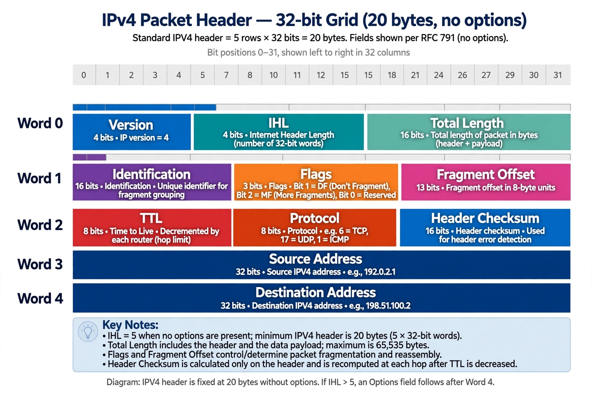

IPv4
| IPv4 | |
|---|---|
| Address size | 32 bits |
| Address space | 4,294,967,296 (2^32) |
| Standard | RFC 791 (1981) |
| Notation | Dotted decimal, e.g. 192.0.2.1 |

Diagram of the IPv4 packet header with its fields: version, header length, total length, identification, flags, fragment offset, TTL, protocol, checksum, source and destination addresses
Internet Protocol version 4 (IPv4) is the fourth version of the Internet Protocol and was the first version widely deployed for the ARPANET and the subsequent Internet. Described in RFC 791 in 1981, it routes most of today's Internet traffic, carrying packets between networks using 32-bit addresses.
IPv4 addresses are usually written in dotted-decimal notation: four decimal numbers, each representing one byte, separated by periods. The total space of about 4.3 billion addresses seemed ample in the 1980s but proved finite; blocks are set aside for private networks, multicast and research, shrinking the public pool further.
Address exhaustion
By the 1990s it was clear the free pool would run out. IANA allocated the last of its unassigned address blocks to the regional registries in February 2011, and the registries themselves have since exhausted their reserves. Several stopgaps prolonged IPv4's life: classless inter-domain routing (CIDR) made allocation more efficient, network address translation (NAT) let whole households and companies share a single public address, and a transfer market emerged for trading blocks. The long-term answer is IPv6, whose adoption has grown steadily but which coexists with IPv4 rather than replacing it outright.
The packet
An IPv4 packet carries a header of at least 20 bytes containing, among other fields, the source and destination addresses, a time-to-live (TTL) counter that prevents packets looping forever, a protocol field identifying the payload (often TCP or UDP), and a header checksum. Routers may fragment packets that exceed the next link's maximum transmission unit.